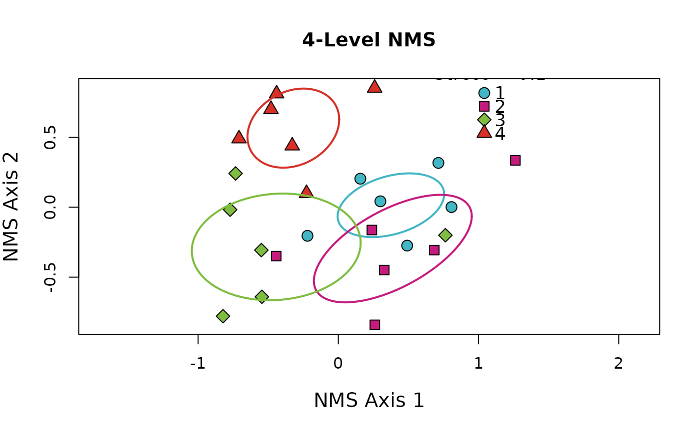

Publication-Quality Non-metric Multi-dimensional Scaling (NMS) Ordinations
Source:R/nms_ord.R
nms_ord.RdProduces Non-Metric Multi-dimensional Scaling (NMS) ordinations for up to 10 groups. Assigns a unique color for each group and draws an ellipse around the standard deviation of the points. Automatically adds stress (see vegan::metaMDS for explanation of "stress") as legend title. Because there are only five hollow shapes (see ?graphics::pch()) all shapes are re-used a maximum of 2 times when more than 5 groups are supplied.
Usage
nms_ord(
mod = NULL,
groupcol = NULL,
title = NA,
colors = c("#41b6c4", "#c51b7d", "#7fbc41", "#d73027", "#4575b4", "#e08214", "#8073ac",
"#f1b6da", "#b8e186", "#8c96c6"),
shapes = rep(x = 21:25, times = 2),
lines = rep(x = 1, times = 10),
pt_size = 1.5,
pt_alpha = 1,
leg_pos = "bottomleft",
leg_cont = unique(groupcol)
)Arguments
- mod
Object returned by
vegan::metaMDS- groupcol
(dataframe) column specification in the data that includes the groups (accepts either bracket or $ notation)
- title
(character) string to use as title for plot
- colors
(character) vector of colors (as hexadecimal codes) of length >= group levels (default not colorblind safe because of need for 10 built-in unique colors)
- shapes
(numeric) vector of shapes (as values accepted by
pch) of length >= group levels- lines
(numeric) vector of line types (as integers) of length >= group levels
- pt_size
(numeric) value for point size (controlled by character expansion i.e.,
cex)- pt_alpha
(numeric) value for transparency of points (ranges from 0 to 1)
- leg_pos
(character or numeric) legend position, either numeric vector of x/y coordinates or shorthand accepted by
graphics::legend- leg_cont
(character) vector of desired legend entries. Defaults to
uniqueentries ingroupcolargument (this argument provided in case syntax of legend contents should differ from data contents)
Examples
# \donttest{
# Use data from the vegan package
utils::data("varespec", package = 'vegan')
resp <- varespec
# Make some columns of known number of groups
factor_4lvl <- c(rep.int("Trt1", (nrow(resp)/4)),
rep.int("Trt2", (nrow(resp)/4)),
rep.int("Trt3", (nrow(resp)/4)),
rep.int("Trt4", (nrow(resp)/4)))
# And combine them into a single data object
data <- cbind(factor_4lvl, resp)
# Actually perform multidimensional scaling
mds <- vegan::metaMDS(data[-1], autotransform = FALSE, expand = FALSE, k = 2, try = 50)
#> Run 0 stress 0.1000211
#> Run 1 stress 0.1715395
#> Run 2 stress 0.1000211
#> ... Procrustes: rmse 1.068764e-05 max resid 4.170213e-05
#> ... Similar to previous best
#> Run 3 stress 0.1605747
#> Run 4 stress 0.1613668
#> Run 5 stress 0.1000211
#> ... New best solution
#> ... Procrustes: rmse 3.277054e-06 max resid 1.416261e-05
#> ... Similar to previous best
#> Run 6 stress 0.1607499
#> Run 7 stress 0.1000211
#> ... New best solution
#> ... Procrustes: rmse 3.547968e-07 max resid 1.025797e-06
#> ... Similar to previous best
#> Run 8 stress 0.1000211
#> ... Procrustes: rmse 6.553308e-06 max resid 2.717474e-05
#> ... Similar to previous best
#> Run 9 stress 0.1000211
#> ... Procrustes: rmse 1.847283e-05 max resid 5.887532e-05
#> ... Similar to previous best
#> Run 10 stress 0.1000211
#> ... Procrustes: rmse 1.638284e-06 max resid 6.797019e-06
#> ... Similar to previous best
#> Run 11 stress 0.1607505
#> Run 12 stress 0.2186732
#> Run 13 stress 0.1000211
#> ... Procrustes: rmse 9.336186e-06 max resid 4.046768e-05
#> ... Similar to previous best
#> Run 14 stress 0.1000211
#> ... Procrustes: rmse 1.860223e-05 max resid 7.962999e-05
#> ... Similar to previous best
#> Run 15 stress 0.1000211
#> ... New best solution
#> ... Procrustes: rmse 3.514954e-06 max resid 1.498052e-05
#> ... Similar to previous best
#> Run 16 stress 0.1000211
#> ... Procrustes: rmse 1.420825e-05 max resid 6.162886e-05
#> ... Similar to previous best
#> Run 17 stress 0.160494
#> Run 18 stress 0.1000211
#> ... Procrustes: rmse 6.506975e-06 max resid 2.816072e-05
#> ... Similar to previous best
#> Run 19 stress 0.1733341
#> Run 20 stress 0.1000211
#> ... Procrustes: rmse 1.532844e-05 max resid 6.633466e-05
#> ... Similar to previous best
#> *** Best solution repeated 4 times
# With the scaled object and original dataframe we can use this function
nms_ord(mod = mds, groupcol = data$factor_4lvl,
title = '4-Level NMS', leg_pos = 'topright',
leg_cont = as.character(1:4))

# }